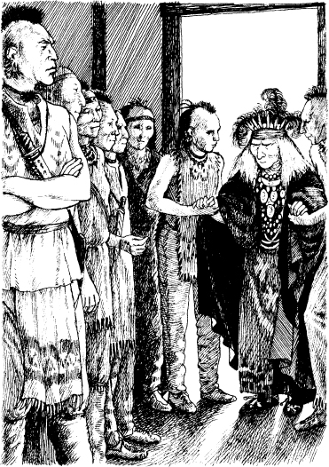

Magua đến làng của người Delaware. Người Delaware là bạn của Pháp. Nhưng họ không tham chiến.
Magua đến nhà họp của người Delaware. Các tù trưởng Delaware đang nói chuyện.
‘Tù trưởng Huron được chào đón,’ một người Delaware nói.
‘Người phụ nữ tù nhân của tôi có an toàn và khỏe mạnh không?’ Magua hỏi.
‘Cô ấy vẫn khỏe,’ người Delaware nói.
Sau đó, Magua nói, ‘Có người lạ trong rừng không? Người da trắng?’
‘Có người lạ trong làng,’ người Delaware nói. ‘Họ ở trong nhà tôi. Nhưng người lạ luôn được chào đón ở ngôi làng này.’
‘Vua Pháp sẽ nói gì về điều này?’ Magua nói. ‘Kẻ thù lớn nhất của ngài hiện đang ở trong làng của người Delaware. Kẻ thù này là một người da trắng. Hắn giết nhiều bạn của người Pháp.’
‘Người da trắng nào là kẻ thù của Pháp?’ tù trưởng Delaware hỏi.
‘Trinh sát Hawk-eye!’ Magua nói. ‘Súng dài! Những người lạ kia là bạn của hắn. Họ cũng là kẻ thù của Pháp.’
Người Delaware bắt đầu nói chuyện khe khẽ. Một người trong số họ nhanh chóng rời khỏi nhà họp. Vài phút sau, anh ta quay lại.
Sau đó, một ông già bước vào nhà họp. Hai thanh niên Delaware dìu ông già. Ông có mái tóc dài bạc trắng và nhiều nếp nhăn trên khuôn mặt. Các tù trưởng gọi tên ông là ‘Tamenund.’

Magua biết tên của vị tù trưởng Delaware nổi tiếng này. Tamenund đã hơn một trăm tuổi rồi!
Tamenund ngồi xuống. Sau đó, ông nói chuyện với hai thanh niên Delaware. Họ đứng dậy và đi ra ngoài.
Chẳng mấy chốc, họ trở lại cùng Alice, Cora, Duncan và Hawk-eye.
Cora rất tức giận. Cô nói với các tù trưởng.
‘Ngày hôm qua, chúng tôi được chào đón ở ngôi làng này,’ cô nói. ‘Người Delaware là bạn của chúng tôi. Hôm nay chúng tôi trở thành tù nhân của các người. Tại sao chúng tôi lại là tù nhân?’
Tamenund không trả lời.
‘Hawk-eye, Súng dài, là ai?’ ông hỏi.
Hawk-eye bước tới. ‘Tôi là Hawk-eye,’ anh ta nói.
Sau đó, Tamenund nói nhanh với Magua.
‘Hãy đưa tù nhân của ngươi đi – người phụ nữ tóc đen. Đi đi!’ ông nói.
Nhưng Cora nói với vị tù trưởng già.
‘Một người đàn ông khác đã đến ngôi làng này cùng chúng tôi,’ cô nói. ‘Bây giờ anh ta cũng là tù nhân. Nhưng anh ta là người của các người. Anh ta sẽ kể lại câu chuyện của chúng tôi. Xin hãy! Hãy lắng nghe anh ấy!’
Tamenund nhìn các tù trưởng. ‘Tù nhân kia là ai?’ ông hỏi.
‘Anh ta chiến đấu cho người Anh,’ Magua nhanh chóng nói. ‘Các người phải giết anh ta.’
‘Đưa anh ta đến đây!’ Tamenund nói.
Hai người đàn ông rời khỏi nhà họp. Chẳng mấy chốc, họ trở lại cùng Uncas.
Uncas không mặc áo sơ mi. Tay anh bị trói.
Anh ta đứng trước Tamenund. Vị tù trưởng già nhìn anh ta. Tamenund thấy một hình xăm trên ngực Uncas. Đó là hình ảnh một con rùa.
Tamenund nhìn Uncas. Sau đó, ông mỉm cười với thanh niên Mohican. ‘Cha ngươi là một tù trưởng vĩ đại,’ ông nói.
Đột nhiên, Uncas nhìn thấy Hawk-eye. ‘Cha Delaware ơi,’ anh ta nói với Tamenund. ‘Đây là bạn của con, Hawk-eye. Anh ấy là bạn của người Delaware.’
‘Súng dài ư?’ Tamenund nói. ‘Hắn không phải bạn của người Delaware. Hắn giết thanh niên của chúng ta.’
Sau đó, Hawk-eye lên tiếng. ‘Tôi giết người Huron,’ anh ta nói. ‘Tôi chưa bao giờ giết một người Delaware nào.’
Người Delaware tin lời của Hawk-eye.
Tamenund nhìn Uncas. ‘Tại sao ngươi lại là tù nhân của Huron?’ ông hỏi.
‘Tôi đã giúp người phụ nữ Anh,’ Uncas nói.
Tamenund nhìn Cora. Sau đó, ông nói với Magua.
‘Và tại sao người phụ nữ Anh kia lại là tù nhân của ngươi?’ ông hỏi.
‘Tôi ghét người Anh!’ Magua nói. ‘Giờ thì con gái của một tù trưởng Anh là tù nhân của tôi. Giờ thì con gái của Munro sẽ trở thành vợ tôi.’
Magua đến chỗ Cora và nắm lấy cánh tay cô.
‘Khoan đã!’ Duncan hét lên. ‘Đừng bắt cô ấy đi. Người Anh sẽ trả tiền cho ngươi.’
Nhưng Magua không nghe. Hắn kéo Cora về phía cửa. ‘Đi!’ hắn nói với cô.
‘Tôi là tù nhân của ngươi,’ Cora nói với Magua. ‘Nhưng đừng chạm vào tôi.’
Cô quay sang Duncan. ‘Hãy chăm sóc em gái của tôi,’ cô nói. Cô hôn Alice.
Sau đó, cô nói với Magua. ‘Tôi sẽ đi với ngươi.’
‘Và cả ta nữa!’ Duncan hét lên. ‘Ta sẽ giúp ngươi, Cora!’
‘Khoan đã!’ Hawk-eye nói. Anh ta giữ cánh tay Duncan. Hawk-eye nói nhanh và nhỏ.
‘Bạn bè của Magua đang đợi trong rừng,’ anh ta nói. Chúng sẽ giết ngươi.’
‘Huron!’ Uncas nói. ‘Chúng ta sẽ tìm ngươi! Chúng ta sẽ giết ngươi!’
Nhưng Magua cười. ‘Mohican,’ Magua nói, ‘ngươi không thể giết ta. Ta quá mạnh. Hãy ở lại đây với những người anh em của ngươi, người Delaware. Họ yếu đuối. Họ thích nhà cửa và thức ăn của họ. Họ không thích chiến đấu. Họ sẽ không giúp ngươi.’
Sau đó, Magua bước ra khỏi nhà họp. Cora đi theo hắn.
Uncas nói với Tamenund. ‘Cha Delaware ơi,’ anh ta nói. ‘Hãy giúp chúng con. Chúng con phải theo người phụ nữ Anh.’
Tamenund gọi những thanh niên trong làng. ‘Hãy đi cùng Mohican,’ ông nói. ‘Người Huron giờ đã là kẻ thù của chúng ta!’